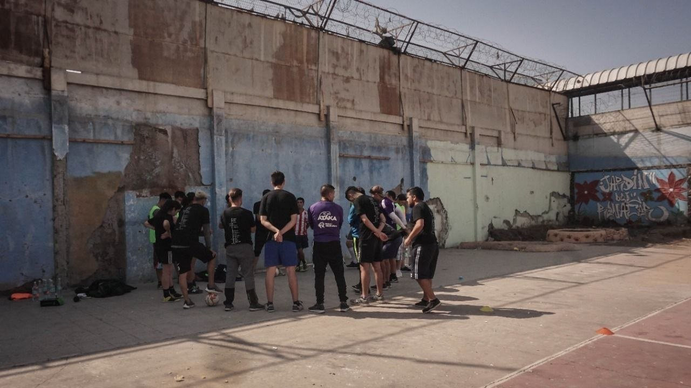

entrada
Ensaios
Textos mais longos para desenvolver ideias sobre jogo, cultura, educação, tecnologia e território.
Caderno público de Sebastián Acevedo Vásquez
Mentalidade de atleta, escuta de educador, gesto de pesquisador, palavra pública e corpo em jogo atravessam comunidades, universidades, mídia, projetos sociais e territórios em movimento.
la cancha también piensa
A mistura é o próprio método: viver o jogo, observar o mundo, transformar experiência em linguagem pública.
Percurso
A bola aparece em campo, na roda, no palco, na rádio, na universidade, no bairro, na escrita e no projeto social. Cada aparição carrega um pedaço da mesma pergunta.
O atleta aprendeu a ler espaços. O educador aprendeu a escutar processos. O pesquisador aprendeu a transformar cenas em linguagem. O articulador aprendeu a fazer a pergunta circular.
Homo Ludens nasce dessa travessia: corpo que percebe, método que reúne, palavra que organiza e circulação que abre caminho para novas colaborações.




Manifesto
Huizinga ajuda a lembrar que o jogo também cria cultura.
Sebastián leva essa intuição para outro chão: a pelada, a escola, o recreio, o futsal, a rua, o Brasil, o Chile, o Nordeste, Abya Yala e os corpos que aprendem enquanto se movem.
Nesse chão, o jogo lê a realidade com corpo, gesto, regra, memória e encontro.
Por isso este caderno existe: para pensar esporte, educação, cultura, tecnologia e vida em movimento com os pés no chão, a bola em movimento e o coração aberto.
Caderno
O caderno organiza textos, notas e séries que nascem de cenas concretas: uma bola rolando, uma aula que muda de rumo, uma viagem, uma conversa, uma leitura, uma pergunta que fica.
entrada
Textos mais longos para desenvolver ideias sobre jogo, cultura, educação, tecnologia e território.
registro
Registros curtos de viagens, aulas, encontros, quadras, projetos e conversas que deixam perguntas abertas.
pergunta
Pequenas teses para olhar o esporte como linguagem social: quem entra, quem fica fora, quem decide a regra, quem cuida.
biblioteca
Diálogos com autores, livros e ideias que ajudam a pensar o jogo desde a América Latina.
entrada inaugural
Uma quadra guarda regras inventadas, memórias do corpo, pequenas formas de justiça, pertencimentos, conflitos e modos de aprender juntos.
Ler ensaio
nota de campo
A chegada já escreve a primeira página da aula. O grupo entra, o corpo fala e a quadra revela o que precisa ser aprendido.
Ler nota
Publicações por aí
Uma pequena estante externa: artigos, opinião pública, mídia esportiva e fala institucional.
2026 / Artigo
Infância, desenvolvimento e direito de florescer como leitura sensível do esporte e da educação.
Abrir publicação externa
 youtube.com
youtube.comVídeo / YouTube
Fala institucional sobre esporte, inovação e política pública em espaço legislativo.
Assistir vídeo
 youtube.com
youtube.comVídeo / Arquivo vivo
Registro audiovisual que ancora o caderno em memória concreta: futebol, corpo, celebração pública e cultura de rua em movimento.
Assistir no YouTube
Coluna / Idealex
Direitos humanos, reinserção e esporte como linguagem de inclusão social.
Abrir coluna
Matéria / Meu Timão
Torcida, vínculo, juventude e transformação social pelo futebol.
Abrir matéria
Artigo / Ludopédio
Estratégia coletiva, confiança e rede colaborativa como modo de virar o jogo.
Abrir artigo
2015 / Opinião
Uma defesa pública da educação como construção social que vai além da sala de aula.
Abrir opinião
Corpo
Sebastián Acevedo Vásquez é ex-atleta, educador, pesquisador independente, professor universitário e articulador de ecossistemas entre Brasil, Chile e América Latina.
Sua trajetória cruza esporte, direito, educação, inovação, cultura popular, políticas públicas e projetos sociais. Essa mistura aparece como lugar de fala: alguém que pensa com o corpo, escuta o território e transforma experiência em método.
Ex-atleta e educador
Professor universitário no Chile
Cofundador da SportsCoLab
Articulador Brasil-Chile
Método
O jogo como linguagem, rito, regra, disputa, festa, memória e forma de produzir comunidade.
Aprendizagem que passa pelo corpo, pela brincadeira, pela convivência, pelo erro e pela experiência compartilhada.
Cancha, bairro, rua, escola, periferia, viagem, arquivo vivo. O lugar também ensina.
caminar el territorio también es investigar
Tecnologia, sportstech, ecossistemas e política pública com pessoas, vínculos e consequências no centro.
Palavra
Ninguém pensa sozinho. Este caderno conversa com autores, livros, experiências, comunidades e memórias que ajudam a olhar o jogo desde outro lugar.
Autores e referências
Livros e fichas
Trilhas de estudo
Glossario vivo
Trilha Homo Ludens: Huizinga como raiz para caminhar desde o Sul.
Circulação
Cada frente abre um lugar de escuta e ação para a mesma pergunta: como o esporte pode produzir aprendizagem, cultura, inovação e desenvolvimento humano?
laboratório
Laboratorio de inovação esportiva. Papel: cofundador e Diretor de Ecossistemas e Cultura de Inovação.
formação
Formação, consultoria, audiovisual, futebol, cultura e educação. Papel: Diretor de Inovação e Tecnologia, produtor, metodólogo e articulador estratégico.
associação
Organização sem fins lucrativos no Brasil para cultura, esporte, direitos humanos, educação e impacto territorial. Papel: presidente e articulador institucional.
arquivo
Estudos, levantamentos e projetos de inteligencia aplicada sobre esporte, território, políticas públicas e inovação. Radar Futsal SP fica pausado como chamada pública neste momento.
Colaborar
Se uma instituição, projeto, comunidade ou evento precisa pensar esporte, educação e cultura com escuta, critério e continuidade, podemos conversar.
A colaboracao pode nascer de uma palestra, uma aula, uma oficina, uma consultoria estratégica, uma curadoria, uma pesquisa aplicada ou o desenho de um programa.
Contato
Para convites, aulas, palestras, projetos, pesquisas e colaboracoes institucionais, use o formulário de colaboração. Para acompanhar notas, perguntas e processos, siga os canais de Homoludens.
Onde tem jogo, tem mundo tentando se explicar.